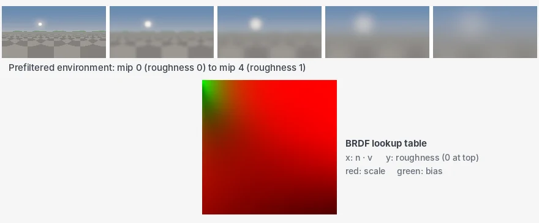
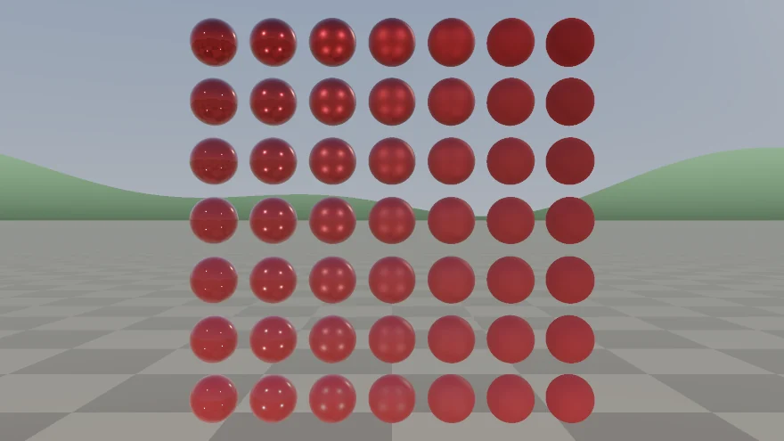

PBR
Specular IBL#
The diffuse half of image-based lighting depended only on the normal, so one small cubemap solved it. The specular half is harder:
Lo = ∫Ω (D·F·G / (4 (wo·n)(wi·n))) · Li(wi) · (n · wi) dwi
It depends on the normal, the view direction, the roughness and F0. Precomputing every combination is impossible. Epic Games' split-sum approximation breaks the integral into two parts that can be precomputed:
- A prefiltered environment map: the environment blurred by the right amount for each roughness level.
- A BRDF lookup table: a 2D texture that holds the rest of the BRDF's response.
Part 1: the prefiltered environment map#
A rough surface reflects a wide cone of the environment, a smooth one a narrow cone. We store increasingly blurred versions of the environment in the mip levels of a cubemap: level 0 for roughness 0, the last level for roughness 1. At render time, the reflection vector and the roughness select the direction and the mip level.
The approximation assumes the view direction equals the reflection direction equals the normal, since the view direction is unknown at precompute time. This costs some stretching of reflections at grazing angles and is otherwise hard to notice.
Importance sampling#
Averaging the environment uniformly would need thousands of samples. Importance sampling generates sample directions concentrated where the GGX distribution is large, so a few dozen suffice. It needs well-distributed quasi-random numbers, for which the Hammersley sequence is the usual choice:
static float radicalInverse(uint bits) {
bits = (bits << 16u) | (bits >> 16u);
bits = ((bits & 0x55555555u) << 1u) | ((bits & 0xAAAAAAAAu) >> 1u);
bits = ((bits & 0x33333333u) << 2u) | ((bits & 0xCCCCCCCCu) >> 2u);
bits = ((bits & 0x0F0F0F0Fu) << 4u) | ((bits & 0xF0F0F0F0u) >> 4u);
bits = ((bits & 0x00FF00FFu) << 8u) | ((bits & 0xFF00FF00u) >> 8u);
return float(bits) * 2.3283064365386963e-10; // divide by 2^32
}
static float2 hammersley(uint i, uint count) {
return float2(float(i) / float(count), radicalInverse(i));
}
static float3 importanceSampleGGX(float2 xi, float3 N, float roughness) {
float a = roughness * roughness;
float phi = 2.0 * PI * xi.x;
float cosTheta = sqrt((1.0 - xi.y) / (1.0 + (a * a - 1.0) * xi.y));
float sinTheta = sqrt(1.0 - cosTheta * cosTheta);
float3 H = float3(cos(phi) * sinTheta, sin(phi) * sinTheta, cosTheta);
float3 up = abs(N.z) < 0.999 ? float3(0, 0, 1) : float3(1, 0, 0);
float3 tangent = normalize(cross(up, N));
float3 bitangent = cross(N, tangent);
return normalize(tangent * H.x + bitangent * H.y + N * H.z);
}
The prefilter shader#
struct PrefilterUniforms {
float roughness;
};
fragment float4 fragment_prefilter(CaptureOut in [[stage_in]],
constant PrefilterUniforms &uniforms [[buffer(0)]],
texturecube<float> environment [[texture(0)]],
sampler s [[sampler(0)]]) {
float3 N = normalize(in.localPosition);
float3 R = N, V = N;
const uint sampleCount = 1024;
float3 color = float3(0.0);
float totalWeight = 0.0;
for (uint i = 0; i < sampleCount; i++) {
float2 xi = hammersley(i, sampleCount);
float3 H = importanceSampleGGX(xi, N, uniforms.roughness);
float3 L = normalize(2.0 * dot(V, H) * H - V);
float NdotL = max(dot(N, L), 0.0);
if (NdotL > 0.0) {
// Pick an environment mip level from the sample's probability,
// which greatly reduces noise around bright spots.
float NdotH = max(dot(N, H), 0.0);
float D = distributionGGX(N, H, uniforms.roughness);
float pdf = D * NdotH / (4.0 * max(dot(H, V), 0.0)) + 0.0001;
float resolution = float(environment.get_width());
float saTexel = 4.0 * PI / (6.0 * resolution * resolution);
float saSample = 1.0 / (float(sampleCount) * pdf + 0.0001);
float mip = uniforms.roughness == 0.0 ? 0.0 : 0.5 * log2(saSample / saTexel);
color += environment.sample(s, L, level(mip)).rgb * NdotL;
totalWeight += NdotL;
}
}
return float4(color / totalWeight, 1.0);
}
Rendering the mip chain#
Create a cube texture with mipmaps, around 128 or 256 per face, and render each mip level with a different roughness, using the attachment's level:
let descriptor = MTLTextureDescriptor.textureCubeDescriptor(pixelFormat: .rgba16Float,
size: 128, mipmapped: true)
descriptor.usage = [.renderTarget, .shaderRead]
prefilterMap = device.makeTexture(descriptor: descriptor)!
let mipCount = 5
for mip in 0..<mipCount {
var uniforms = PrefilterUniforms(roughness: Float(mip) / Float(mipCount - 1))
renderToCube(prefilterMap, level: mip, commandBuffer: commandBuffer) { encoder, viewProjection in
encoder.setRenderPipelineState(prefilterPipelineState)
encoder.setFragmentBytes(&uniforms, length: MemoryLayout<PrefilterUniforms>.stride, index: 0)
encoder.setFragmentTexture(environmentCube, index: 0)
encoder.setFragmentSamplerState(trilinearSampler, index: 0)
drawCube(encoder, viewProjection)
}
}
Each mip level is half the size of the one before, and the viewport follows the attachment size automatically. Use a sampler with linear mip filtering, or the per-sample mip selection in the shader has no effect.
Cubemap filtering in Metal is seamless across faces, so there are no visible seams at face edges in the blurred levels.
Part 2: the BRDF lookup table#
The second half of the split sum depends on only two numbers: n · v and the roughness. Its result, a scale and a bias to apply to F0, fits in the red and green channels of a 2D texture. The table is the same for every environment, so compute it once, or even ship it as an image.
static float geometrySchlickGGX_IBL(float NdotV, float roughness) {
float k = (roughness * roughness) / 2.0; // note: a different k for IBL
return NdotV / (NdotV * (1.0 - k) + k);
}
static float2 integrateBRDF(float NdotV, float roughness) {
float3 V = float3(sqrt(1.0 - NdotV * NdotV), 0.0, NdotV);
float3 N = float3(0, 0, 1);
float A = 0.0, B = 0.0;
const uint sampleCount = 1024;
for (uint i = 0; i < sampleCount; i++) {
float2 xi = hammersley(i, sampleCount);
float3 H = importanceSampleGGX(xi, N, roughness);
float3 L = normalize(2.0 * dot(V, H) * H - V);
float NdotL = max(L.z, 0.0);
float NdotH = max(H.z, 0.0);
float VdotH = max(dot(V, H), 0.0);
if (NdotL > 0.0) {
float G = geometrySchlickGGX_IBL(NdotV, roughness)
* geometrySchlickGGX_IBL(NdotL, roughness);
float GVis = (G * VdotH) / (NdotH * NdotV);
float Fc = pow(1.0 - VdotH, 5.0);
A += (1.0 - Fc) * GVis;
B += Fc * GVis;
}
}
return float2(A, B) / float(sampleCount);
}
fragment float4 fragment_brdfLUT(ScreenOut in [[stage_in]]) {
// u is NdotV; v is roughness, with roughness 0 at the top row.
float2 result = integrateBRDF(max(in.uv.x, 0.001), in.uv.y);
return float4(result, 0.0, 1.0);
}
Render it with the full-screen triangle into a 512 × 512 .rg16Float texture. The result is a smooth red-to-yellow gradient.

Putting it together#
float3 R = reflect(-V, N);
const float maxReflectionLevel = 4.0; // mipCount - 1
float3 prefiltered = prefilterMap.sample(s, R, level(roughness * maxReflectionLevel)).rgb;
float2 brdf = brdfLUT.sample(clampSampler, float2(max(dot(N, V), 0.0), roughness)).rg;
float3 F = fresnelSchlickRoughness(max(dot(N, V), 0.0), F0, roughness);
float3 specular = prefiltered * (F * brdf.x + brdf.y);
float3 kD = (1.0 - F) * (1.0 - metallic);
float3 diffuse = irradianceMap.sample(s, N).rgb * albedo;
float3 ambient = (kD * diffuse + specular) * ao;
float3 color = ambient + Lo;
Sample the lookup table with a clamping sampler. The texture coordinate for roughness must match how you rendered the table: here row 0, the top, is roughness 0.
Now the metal spheres come alive. Smooth ones mirror the environment, rough ones show a soft, blurred version of it, and everything is tinted correctly by F0. Together with the direct lighting from point lights, this is a complete PBR pipeline.

Beyond a single probe#
One environment map describes the light at one point. Inside a building, a sphere would reflect the sky through the walls. Engines place many reflection probes around a level, each with its own prefiltered map, and blend between the nearest ones. Screen-space reflections and, on capable hardware, ray traced reflections add what probes cannot capture: nearby, moving objects.
Exercises#
- Display each mip level of the prefiltered map as a skybox.
- Precompute the three IBL textures once and cache them on disk.
- Load a full PBR model and place it in three different environments without changing its material.